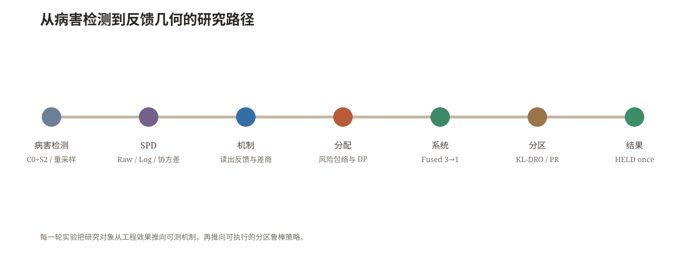
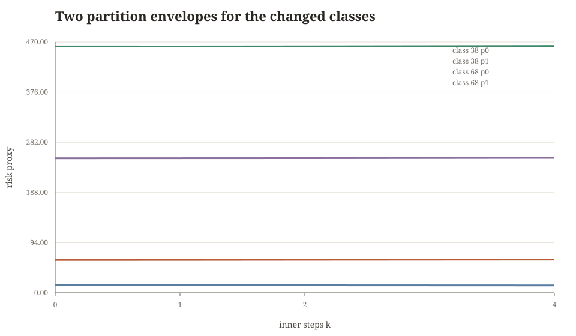
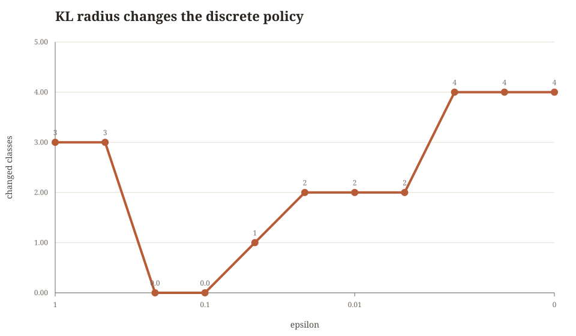
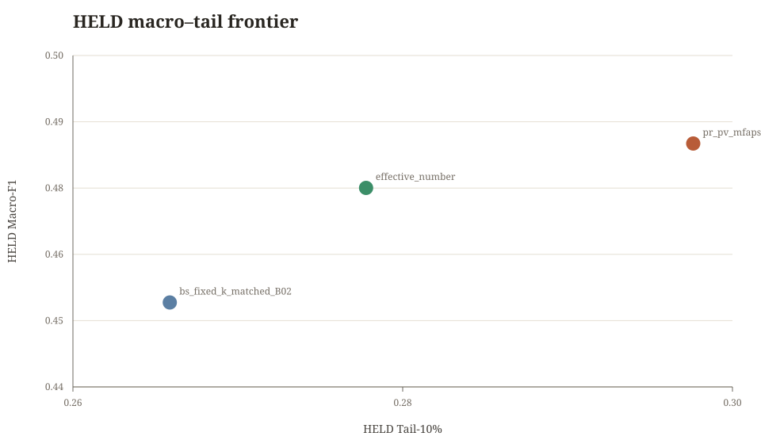
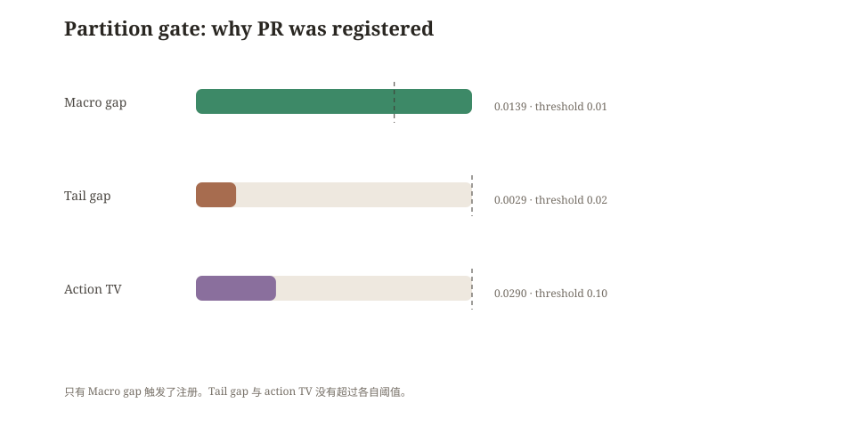
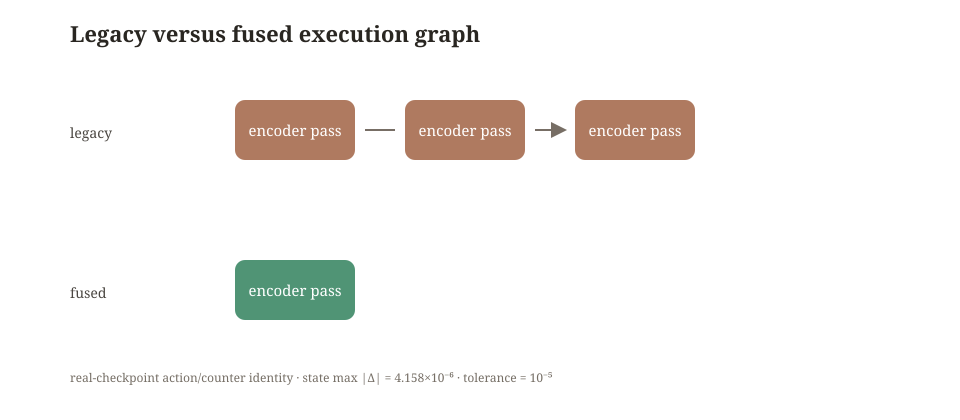

<!doctype html>
<html lang="zh-CN">
<head>
<meta charset="utf-8">
<meta name="viewport" content="width=device-width,initial-scale=1">
<title>反馈几何与分区鲁棒内循环分配：PlantSPD 长尾训练研究记录</title>
<link rel="stylesheet" href="styles.css">
<script>
window.MathJax={tex:{inlineMath:[['\\(','\\)'],['$','$']],displayMath:[['\\[','\\]'],['$$','$$']]},options:{skipHtmlTags:['script','noscript','style','textarea','pre','code']}};
</script>
<script defer src="https://cdn.jsdelivr.net/npm/mathjax@3/es5/tex-mml-chtml.js"></script>
<script defer src="https://cdn.jsdelivr.net/npm/marked/marked.min.js"></script>
<script defer src="site.js"></script>
</head>
<body>
<div class="layout">
<aside class="rail">
  <div class="eyebrow">PlantSPD · Feedback Geometry</div>
  <h2>反馈几何与分区鲁棒内循环分配</h2>
  <nav>
    <a href="#thesis">主旨</a>
    <a href="#origin">起点</a>
    <a href="#data">数据</a>
    <a href="#mechanism">机制</a>
    <a href="#method">方法</a>
    <a href="#experiments">实验</a>
    <a href="#system">系统</a>
    <a href="#evidence">边界</a>
  </nav>
  <div class="hint">宋体阅读版<br>公式由 MathJax 渲染<br>正文承载主线，章节只补充细节<br>更新：2026-11-07</div>
</aside>
<main class="main">
<section class="hero" id="thesis">
  <div class="kicker">一份从 PlantSPD 出发、经过失败与系统重写后留下的研究记录</div>
  <h1>从反馈失配到分区鲁棒内循环分配</h1>
  <p class="hero-subtitle">PlantSPD 长尾训练中，读出几何如何改变编码器的学习反馈</p>
  <p class="lead">最初的问题看起来像一个熟悉的表示比较：Raw、矩阵 Log，究竟哪一种 SPD 几何更适合植物病害识别？真正的转折发生在固定特征读出已经接近完美，而联合训练仍然走向不同轨迹之后。研究由此从“比较几何”转向“测量反馈”，再转向“为反馈分配内循环精度”，最后进入分区异质性和真实 GPU 执行图。</p>
  <div class="meta"><span class="pill">69 类植物病害</span><span class="pill">FIT 4,184 / HELD 1,046</span><span class="pill">头尾比 68.8</span><span class="pill">A100-SXM4-40GB</span><span class="pill">最终 24 states</span></div>
</section>

<section class="section opening" id="summary">
  <div class="section-label">先把结论放在读者面前</div>
  <h2>三条线同时成立，结论才完整</h2>
  <p class="intro">这项工作最后没有收敛成“某个谱函数在所有数据上更好”的简单答案。它留下了三个彼此独立、又能互相解释的结果。</p>
  <div class="grid three highlight-grid">
    <article class="card highlight"><span class="number">01</span><h3>机制</h3><p>固定特征上“读得出来”，不等于当前读出会向编码器传回同一条有用梯度。这个差异可以用读出反馈失配 (e_psi) 直接测量。</p></article>
    <article class="card highlight"><span class="number">02</span><h3>分配</h3><p>长尾训练真正需要决定的不是给哪一类加权，而是每个类的读出内循环要解到什么精度。PV-MFAPS 用风险包络和有限动作 DP 做这件事。</p></article>
    <article class="card highlight"><span class="number">03</span><h3>系统</h3><p>Fused 路径把逻辑上的多次 native/reference 计算合并到一次物理 encoder forward。动作序列不变，真实 wall-clock 和 FLOPs 才能被公平比较。</p></article>
  </div>
  <blockquote>真正被研究的对象不是一个“更强的头”，而是一个近似读出如何改变编码器下一步会看到的世界。</blockquote>
  <div class="callout"><b>结果边界。</b> PR-PV-MFAPS 在本次 PlantSPD matched 协议中相对 fixed-k 同时提高 HELD Macro-F1 与 Tail-10%，并满足本轮 fixed-k 的成本门槛。这个结果属于当前数据、划分、动作集和预算合同，不能替换成社区 SOTA、跨任务泛化或普适改进。</div>
</section>

<section class="section" id="origin">
  <div class="section-label">01 · 起点</div>
  <h2>从“Raw 还是 Log”开始，问题很快变得不再是 Raw 还是 Log</h2>
  <p>PlantSPD 把图像空间 token 组织成 SPD 协方差表示，再交给分类头。对固定编码器，Raw 与 Log 都可以被重新拟合的 affine readout 读出。这个事实先排除了一个过于直接的解释：不能把联合训练差异简单写成“Log 丢了标签信息”。</p>
  <p>真正需要区分的是四个对象：</p>
  <div class="grid four compact-grid">
    <div class="card"><b>表示是否含有信息</b><p>固定 encoder 后用充分读出的可达性能。</p></div>
    <div class="card"><b>读出是否已经就绪</b><p>当前 (W_t) 与同一表示上的 (W^*(psi)) 相差多少。</p></div>
    <div class="card"><b>反馈是否可靠</b><p>两种读出产生的 encoder gradient 是否同向。</p></div>
    <div class="card"><b>计算是否值得</b><p>修正一次反馈需要多少真实 forward、backward 和 wall-clock。</p></div>
  </div>
  <blockquote>表示里有信息，和当前读出是否会把正确的信号传回编码器，是两个问题。把它们混在一起，后面的每一次优化都会被错误的诊断牵着走。</blockquote>
  <figure class="figure"><figcaption>研究顺序不是方法名的堆叠，而是由每一轮实验留下的未解决问题推动。</figcaption></figure>
</section>

<section class="section" id="data">
  <div class="section-label">02 · 数据与评估边界</div>
  <h2>长尾和配对分区，把“谁需要更多计算”变成了可检验的问题</h2>
  <p>数据包含 69 个病害类别。FIT 中最少类别有 5 个样本，最多类别有 344 个样本，头尾比为 68.8。训练阶段只使用 FIT，所有动作策略、阈值和成本模型都在 HELD 读取前冻结。冻结后，HELD 只读取一次。</p>
  <div class="grid metrics">
    <div class="card metric"><div class="value">69</div><div class="label">类别数</div><div class="note">植物病害识别</div></div>
    <div class="card metric"><div class="value">4,184</div><div class="label">FIT 样本</div><div class="note">用于校准和训练</div></div>
    <div class="card metric"><div class="value">1,046</div><div class="label">HELD 样本</div><div class="note">freeze 后一次性读取</div></div>
    <div class="card metric"><div class="value">68.8×</div><div class="label">头尾比</div><div class="note">计数范围 5–344</div></div>
  </div>
  <div class="table-wrap"><table><thead><tr><th>边界</th><th>执行方式</th><th>它保护了什么</th></tr></thead><tbody>
    <tr><td>FIT / HELD</td><td>FIT 可用于校准和训练，HELD 在 freeze 后只读一次</td><td>避免用验证结果选择策略</td></tr>
    <tr><td>p0 / p1</td><td>两个分区逐类计数完全配对，最大计数差为 0</td><td>分区动作变化不能归因于频率差异</td></tr>
    <tr><td>动作集</td><td>(mathcal K={0,1,2,4})，(alpha) 取注册离散值</td><td>保证 DP 和成本比较可复核</td></tr>
    <tr><td>成本</td><td>最终使用 measured fixed-k 成本，proxy 只用于 preflight</td><td>避免“理论省算力、实际更慢”</td></tr>
  </tbody></table></div>
  <p class="small">p0/p1 的计数配对是后续 PR 分析的关键识别条件。它把频率因素固定住，让动作差异必须回到 partition-specific risk geometry。</p>
</section>

<section class="section" id="mechanism">
  <div class="section-label">03 · 机制线</div>
  <h2>前向预测可以几乎不变，反向学习却可以完全换一条路</h2>
  <p>令 (C_psi(x_i)) 是编码器产生的 SPD 矩阵，(phi) 是谱映射，(z_psi(x_i)) 是把 (phi(C_psi(x_i))) 向量化后的读出特征。对读出 (W) 和编码器参数 (psi)，考虑显式正则化目标：</p>
  <div class="math-block">\[
  z_\psi(x_i)=\operatorname{svec}\!\left(\phi(C_\psi(x_i))\right),\qquad
  L(\psi,W)=\frac1n\sum_{i=1}^n\ell\!\left(Wz_\psi(x_i),y_i\right)+\frac{\lambda}{2}\lVert W\rVert_F^2.
  \]</div>
  <p>在固定 (psi) 时，读出层的参考解定义为</p>
  <div class="math-block">\[
  W^*(\psi)=\arg\min_W L(\psi,W).
  \]</div>
  <p>训练中使用的是有限步得到的 (W_t)，因此编码器真正收到的梯度和理想参考梯度分别为</p>
  <div class="math-block">\[
  g_{\mathrm{actual}}=\nabla_\psi L(\psi,W_t),\qquad
  g_{\mathrm{ref}}=\nabla_\psi L\!\left(\psi,W^*(\psi)\right),\qquad
  e_\psi=g_{\mathrm{actual}}-g_{\mathrm{ref}}.
  \]</div>
  <p>这里的 (e_psi) 不是简单的 head loss gap。它经过 (z_psi) 对 (psi) 的 Jacobian 投影，直接改变下一步 encoder update。一个特别直观的反例是：把当前 batch 的特征堆成 (Z)，若头部扰动 (U) 满足 (ZU=0)，则 (W) 与 (W+U) 在该 batch 上产生相同 logits；但若 (R=partial L/partial(ZW))，则</p>
  <div class="math-block">\[
  \nabla_ZL=RW^\top,\qquad
  \nabla_ZL' =R(W+U)^\top,\qquad
  \Delta\nabla_ZL=RU^\top.
  \]</div>
  <blockquote>前向等价只说明当前输出接近，不能说明这两个读出会把同一条更新信号送回表示。</blockquote>
  <h3>Loewner 差商是几何和反馈之间的桥</h3>
  <p>设 (C=ULambda U^\top) 是 SPD 矩阵。对谱函数 (phi)，Fréchet 导数为</p>
  <div class="math-block">\[
  D\phi_C[H]=U\!\left(G_\phi(\Lambda)\odot(U^\top H U)\right)U^\top,
  \]</div>
  <p>其中 Loewner 差商矩阵满足</p>
  <div class="math-block">\[
  (G_\phi)_{ij}=\begin{cases}
  \dfrac{\phi(\lambda_i)-\phi(\lambda_j)}{\lambda_i-\lambda_j},&\lambda_i\ne\lambda_j,\\[8pt]
  \phi'(\lambda_i),&\lambda_i=\lambda_j.
  \end{cases}
  \]</div>
  <p>前向表示由 (phi(lambda_i)) 决定，反馈方向由 (G_phi) 调制。对矩阵 Log，(phi'(lambda)=1/lambda)，小特征值会放大一部分局部扰动。这里必须把三个问题分开：Log 的导数怎样被数值计算，几何映射本身怎样调制梯度，有限步读出误差怎样进入 encoder。E0、E1、B3、E2 正是沿着这三层拆开的。</p>
  <div class="grid two"><figure class="figure"><figcaption>p0 与 p1 的风险曲率并不由类别频率决定。它们决定了同一个动作在两个分区中的代价。</figcaption></figure><figure class="figure"><figcaption>11 个 epsilon 值产生 5 个策略向量，鲁棒项是 live 的，但 p1 存在结构性下界。</figcaption></figure></div>
</section>

<section class="section" id="method">
  <div class="section-label">04 · 从诊断到算法</div>
  <h2>PV-MFAPS 不是给尾部“更多权重”，而是给反馈误差一个可计算的包络</h2>
  <p>第一轮实验表明，无约束的极小极大分配会把预算集中到少数类别，均值调度又会把噪声带进整个梯度。于是我们把每个类别的内循环动作 (k) 写成有限动作风险：</p>
  <div class="math-block">\[
  R_c(k)=A_c\rho_c^{2k}+s_c(k)+\beta_c(k)+e_c(\delta).
  \]</div>
  <p>第一项是读出误差的收缩包络。(s_c(k)) 记录有限批次统计，(eta_c(k)) 是在明确假设下的算法稳定性项，(e_c(delta)) 是置信半径。关键是把它们的来源分开，避免把经验曲线包装成普适定理。</p>
  <h3>稳定性项怎样推出来</h3>
  <p>假设类别读出目标是 (lambda)-strongly convex 且 (L)-smooth，内循环使用步长 (etale 1/L)。梯度下降的轨迹收缩率写作</p>
  <div class="math-block">\[
  \rho=\max\{|1-\eta\lambda|,|1-\eta L|\}<1.
  \]</div>
  <p>若替换一个样本最多改变一次内层梯度 (2G/n_c)，对原数据集 (S) 和替换后的 (S') 进行耦合，则</p>
  <div class="math-block">\[
  \begin{aligned}
  \lVert W_k(S)-W_k(S')\rVert
  &\le 2\eta G\sum_{j=0}^{k-1}\frac{\rho^j}{n_c}\\
  &=\frac{2\eta G}{n_c(1-\rho)}(1-\rho^k).
  \end{aligned}
  \]</div>
  <p>若外层损失对读出参数是 (L_\ell)-Lipschitz，可得到条件稳定性贡献</p>
  <div class="math-block">\[
  \beta_c(k)\le \frac{2L_\ell\eta G^2}{n_c(1-\rho_c)}(1-\rho_c^k).
  \]</div>
  <p>这个项在该假设下趋于饱和，而不是指数爆炸。实验里若观察到尾部动作随 (k) 变大而恶化，只能由额外的统计项、估计偏差或真实训练轨迹支持，不能从这条稳定性式子直接推出“方差必然爆炸”。</p>
  <h3>分区鲁棒版本与 KL 对偶</h3>
  <p>当 p0 和 p1 的 FIT 风险出现异质性时，两个分区共享同一动作向量 (a=(a_1,\ldots,a_C))。令 (v=(R_0(a),R_1(a)))，名义分区混合为 (ar u)，KL 歧义集为</p>
  <div class="math-block">\[
  \mathcal U_\varepsilon=\left\{u\in\Delta^2:D_{\mathrm{KL}}(u\Vert\bar u)\le\varepsilon\right\}.
  \]</div>
  <p>鲁棒风险是</p>
  <div class="math-block">\[
  \Phi_\varepsilon(v)=\sup_{u\in\mathcal U_\varepsilon}u^\top v.
  \]</div>
  <p>利用 KL 对偶，可写成一维温度变量 (	au>0) 的优化：</p>
  <div class="math-block">\[
  \Phi_\varepsilon(v)=\inf_{\tau>0}\left[\tau\varepsilon+\tau\log\!\left(\sum_{p=0}^{1}\bar u_p\exp(v_p/\tau)\right)\right].
  \]</div>
  <p>当 (arepsilon=0) 时，它退化为名义分区平均。当 (arepsilon) 增大时，目标更接近最差分区。该映射还满足</p>
  <div class="math-block">\[
  |\Phi_\varepsilon(v)-\Phi_\varepsilon(w)|\le\lVert v-w\rVert_\infty,
  \]</div>
  <p>因此风险量化误差不会被鲁棒聚合放大超过最大分区误差。</p>
  <h3>有限动作 DP 怎样保证全局可复核</h3>
  <p>动作集合为 (mathcal A=mathcal K\timesmathcal G)，其中 (mathcal K={0,1,2,4})。用离散成本桶 (b) 和前 (c) 个类别定义状态 (D_c(b,r))，(r) 表示累计风险向量或其量化索引。逐类转移为</p>
  <div class="math-block">\[
  D_c(b,r)=\min_{a\in\mathcal A}\;D_{c-1}\!\left(b-q_c(a),\;r-\widehat r_c(a)\right)+\widehat r_c(a).
  \]</div>
  <p>最终状态在预算 (B) 内取最小 (Phi_\varepsilon(r))，并回溯每个类的动作。量化后的策略与连续目标之间的误差由 (Phi) 的 1-Lipschitz 性给出：若每个分区风险量化误差不超过 (Delta)，则目标误差不超过 (Delta) 的无穷范数上界。这个结论只证明有限动作问题求解和量化误差控制，不等于证明神经网络层面的总体泛化定理。</p>
  <div class="callout"><b>公式的作用。</b> 这些式子不是为了把启发式改名为理论。它们把可测的反馈误差、可解释的稳定性项、分区风险和实际成本放进同一个有限优化问题，随后每一项都能在 manifest 和实验表中找到来源。</div>
</section>

<section class="section" id="experiments">
  <div class="section-label">05 · 实验与反转</div>
  <h2>每次失败都删掉一个过于简单的解释</h2>
  <p>第一轮 3090 结果把 Macro-F1、Tail-10% 和算力预算之间的冲突暴露出来。它没有直接给出最终方案，却告诉我们哪些路线不能再用。</p>
  <div class="grid four compact-grid">
    <div class="card"><span class="tag open">失败</span><h3>mean TF-GPS</h3><p>FIT 和 HELD 同时下降。类均值调度把尾部估计噪声带入了全局反馈。</p></div>
    <div class="card"><span class="tag conditional">折中</span><h3>CVaR-TF-GPS</h3><p>尾部有所改善，但 HELD Macro-F1 仍低于 effective-number。</p></div>
    <div class="card"><span class="tag conditional">高成本</span><h3>corrected K-MFAPS</h3><p>HELD Tail-10% 达到 0.2778，但实际成本约 (2.154\times10^{12}) FLOPs。</p></div>
    <div class="card"><span class="tag open">边界</span><h3>cost-aware PC-FA</h3><p>FLOPs 合规，wall-clock 和 HELD tail gate 没有同时通过。</p></div>
  </div>
  <div class="table-wrap"><table><thead><tr><th>分支</th><th>HELD Macro-F1</th><th>HELD Tail-10%</th><th>wall / FLOPs 解释</th></tr></thead><tbody>
    <tr><td>effective-number</td><td>0.4760</td><td>0.2778</td><td>宏观强的基线</td></tr>
    <tr><td>fixed-k matched</td><td>0.4553</td><td>0.2659</td><td>最终 PR 的成本参照</td></tr>
    <tr><td>corrected K-MFAPS</td><td>0.4615</td><td>0.2778</td><td>tail trade-off，成本很高</td></tr>
    <tr><td>cost-aware PC-FA</td><td>0.4680</td><td>0.2381</td><td>FIT tail 增益没有在 HELD 复现</td></tr>
    <tr><td>PR-PV-MFAPS</td><td><b>0.4841</b></td><td><b>0.2976</b></td><td>相对 fixed-k 的最终 matched 结果</td></tr>
  </tbody></table></div>
  <figure class="figure"><figcaption>把宏观性能和尾部性能放在同一张图，才能看见方法究竟改善了哪一条边界。</figcaption></figure>
  <h3>epsilon sweep：鲁棒项是 live 的，但 p1 有结构性下界</h3>
  <p>11 个 (arepsilon) 值产生 5 个不同动作向量。最终选取 (arepsilon=0.01)，相对 (arepsilon=0.1) 只改变两个类别的动作：class 38 从 (k=2) 降到 (k=0)，class 68 从 (k=0) 升到 (k=1)。p0 与 p1 的逐类 FIT 计数完全一致，所以这次翻转不能解释成重新采样。</p>
  <div class="grid two"><figure class="figure"><figcaption>动作差异集中在两个类别，说明鲁棒目标是可调的，但有限动作集合也带来结构性天花板。</figcaption></figure><figure class="figure"><figcaption>Macro gap 0.01392 超过预注册 0.01 阈值，触发 PR 注册。</figcaption></figure></div>
  <blockquote>epsilon sweep 最有价值的地方，不是它制造了一个巨大的动作变化，而是它证明了“没有更多动作可以继续解决 p1”本身就是一个可观测的边界。</blockquote>
</section>

<section class="section" id="pr-result">
  <div class="section-label">06 · 最终 matched 结果</div>
  <h2>PR-PV-MFAPS 把两个分区的风险放进同一条可审计策略</h2>
  <p>最终 clean run 把 PR-only 和 clean controls 分开存储，消除了内部 state 名称碰撞。冻结后共有 24 个独立 states，HELD 一次性读取 25,104 次，读取过程中没有错误。</p>
  <div class="grid metrics">
    <div class="card metric"><div class="value">0.4841</div><div class="label">PR HELD Macro-F1</div><div class="note">fixed-k: 0.4553</div></div>
    <div class="card metric"><div class="value">0.2976</div><div class="label">PR HELD Tail-10%</div><div class="note">fixed-k: 0.2659</div></div>
    <div class="card metric"><div class="value">0.9974×</div><div class="label">最大 wall ratio</div><div class="note">相对 fixed-k</div></div>
    <div class="card metric"><div class="value">0.8889×</div><div class="label">最大 FLOPs ratio</div><div class="note">相对 fixed-k</div></div>
  </div>
  <p>相对 effective-number，PR 的 HELD Macro-F1 高 0.0080，Tail-10% 高 0.0198，但 wall ratio 为 1.0768，超过本轮 fixed-k 的 1.05× 预算线。因此这两个比较必须分开陈述：PR 相对 fixed-k 是成本受限的共同提升，相对 effective-number 是更高质量但略高成本的结果，不能把两者压成一个“全面胜出”。</p>
  <div class="callout"><b>最终读法。</b> 这个结果支持“在当前 PlantSPD 配对分区和 fixed-k measured budget 下，分区鲁棒的反馈精度分配有效”。它不支持 community SOTA、跨域泛化、普适长尾改进或 alpha-aware 全局最优。</div>
</section>

<section class="section" id="system">
  <div class="section-label">07 · 系统线</div>
  <h2>Fused 不是算法增益的替代品，它解决的是同一个算法如何被真实执行</h2>
  <p>早期 cost-aware PC-FA 的 FLOPs 看起来合规，却被 wall-clock 拖住。剖析后发现，重复 encoder forward、GPU/CPU 同步、reference probe 计费和 group 调度开销共同构成了实际瓶颈。Fused 路径只改执行图，不改动作序列和逻辑计数。</p>
  <div class="grid two"><div class="card"><h3>等价性 gate</h3><div class="math-block compact">\[
  \mathrm{actions}_{legacy}=\mathrm{actions}_{fused},\qquad
  \mathrm{counters}_{legacy}=\mathrm{counters}_{fused}.
  \]</div><p>真实 checkpoint 一步配对的 encoder state 最大绝对差为 (4.158006\times10^{-6})，低于 (10^{-5}) 容差。</p></div><div class="card"><h3>物理执行变化</h3><div class="value large">3 → 1</div><p>逻辑上仍有多次 native/reference pass，但重复的 encoder work 被融合。8 个训练步只执行 8 个物理 encoder forward。</p></div></div>
  <div class="code-block"><pre><code>k_disc = np.asarray(policy["k_discrete"], dtype=int)
alpha_disc = np.asarray(policy["alpha_discrete"], dtype=float)
active_groups = build_action_groups(k_disc, alpha_disc, batch_labels)
loss_native, loss_reference = fused_pcfa_gradient(
    model=model,
    head=head,
    batch=batch,
    action_groups=active_groups,
)</code></pre></div>
  <figure class="figure"><figcaption>等价性 smoke 的单步 CUDA 时间为 0.60204s → 0.15678s。最终 matched 运行中，分配轴的最大 FLOPs ratio 为 0.8889、平均 0.8593，最大 end-to-end wall ratio 为 1.0379、平均 0.9920。两组数字分别回答“融合是否减少重复执行”和“策略是否满足预算”，不能合并成一个加速率。</figcaption></figure>
</section>

<section class="section" id="evidence">
  <div class="section-label">08 · 能说到哪里，必须停在哪里</div>
  <h2>研究过程的最后一步，是把亮点和边界同时保留下来</h2>
  <div class="grid three"><div class="card"><span class="tag done">EXECUTED</span><h3>已经执行</h3><p>A100 preflight、PR 数学 smoke、epsilon sweep、clean matched、FIT freeze、一次性 HELD、deterministic claims audit。</p></div><div class="card"><span class="tag open">REGISTERED_NOT_EXECUTED</span><h3>注册未执行</h3><p>CIFAR-LT、ImageNet-LT、learnable spectral geometry、第二个 SPD 项目、独立语义 reviewer。</p></div><div class="card"><span class="tag conditional">UNVERIFIED</span><h3>仍未验证</h3><p>community SOTA、跨任务泛化、universal improvement、alpha-aware optimality、robust-cost theorem。</p></div></div>
  <blockquote>严谨不是把故事写小，而是让每一处亮点都知道自己的证据范围。一个系统优化结果可以很硬，但它不能替算法替换一条尚未执行的跨任务结论。</blockquote>
  <h3>只保留三条深入阅读入口</h3>
  <div class="doc-grid"><a class="doc-link" data-doc="docs/01-origin-and-feedback-geometry.md" data-title="反馈几何与机制实验" href="docs/01-origin-and-feedback-geometry.md"><b>机制与反馈几何</b><span>Loewner 差商、E0 / E1 / B3 / E2</span></a><a class="doc-link" data-doc="docs/03-pr-pv-mfaps-derivation.md" data-title="PR-PV-MFAPS 数学推导" href="docs/03-pr-pv-mfaps-derivation.md"><b>数学推导与离散求解</b><span>稳定性界、KL 对偶、Pareto DP</span></a><a class="doc-link" data-doc="docs/04-experiments-and-ablations.md" data-title="实验、消融与结果账本" href="docs/04-experiments-and-ablations.md"><b>实验与消融</b><span>失败分支、A100、epsilon sweep、最终 freeze</span></a></div>
  <p class="small">完整证据清单仍保留在 <a href="docs/06-evidence-ledger.md" data-doc="docs/06-evidence-ledger.md" data-title="证据账本">证据账本</a>，它面向需要追溯原始工件的读者。</p>
</section>

<footer class="footer">资料来源包含 PlantSPD 研究记录、PlantGPU 远程代码镜像、A100/3090 实验工件与 PR-PV-MFAPS 最终 claims-evidence 文件。页面是面向读者的研究复盘，原始 manifest、冻结清单和代码仍以仓库中的文件为准。</footer>
</main>
</div>
<div id="viewer" class="viewer"><div class="viewer-backdrop"></div><div class="viewer-panel"><div class="viewer-head"><h2>深入阅读</h2><button id="closeViewer">关闭</button></div><div class="viewer-source"></div><div class="viewer-content"></div></div></div>
</body>
</html>
